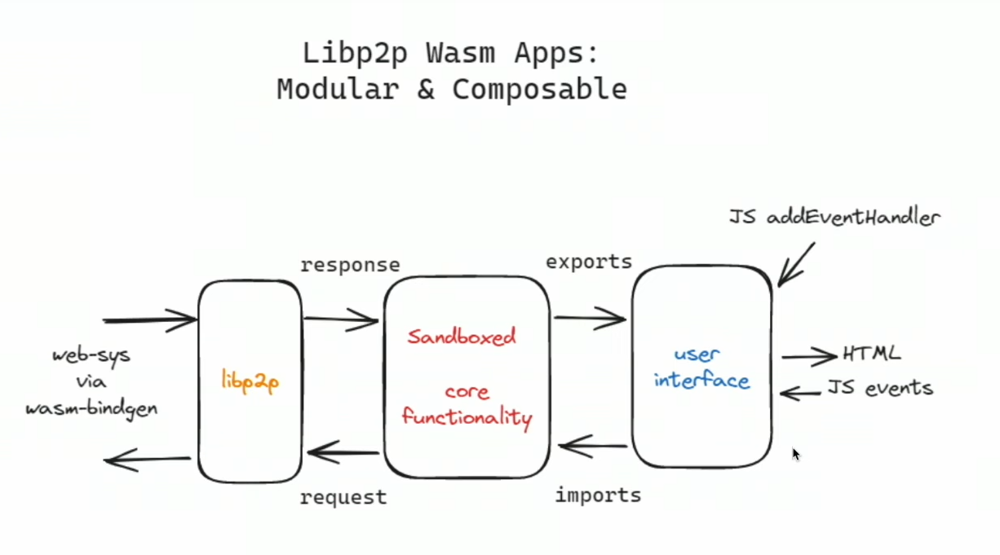
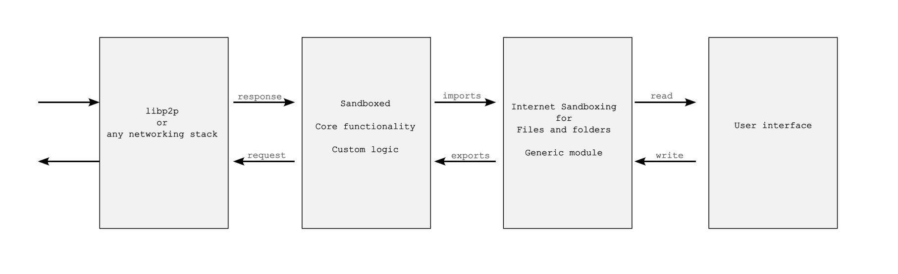

Achieve Websites
https://iambrainstorming.github.io
https://iambrainstorming.github.io/coding_blog/
Parsing with Xpath in rust
You can use package: sxd-xpath
#![allow(unused)] fn main() { cargo new xml_parse }
In Cargo.toml
[dependencies]
sxd-xpath="0.4.2"
sxd-document="0.3.2"
use std::fs; use sxd_document::parser; use sxd_xpath::{evaluate_xpath, Context, Factory, Value}; fn remove_first_two_lines(input: &str) -> String { let mut lines = input.lines(); let mut result = String::new(); // Skip the first two lines lines.nth(0); lines.nth(0); for line in lines { result.push_str(line); result.push('\n'); } result } fn get_list() { let file = fs::read_to_string("src/ids.xml").unwrap(); let data = remove_first_two_lines(&file); let package = parser::parse(&data).expect("failed to parse XML"); let document = package.as_document(); let value = evaluate_xpath(&document, "//Id"); match value { Ok(Value::Nodeset(nodeset)) => { for node in nodeset.iter() { println!("{}", node.string_value()); } } _ => { println!("XPath expression didn't return a nodeset"); } } } fn main() { get_list(); }
ids.xml
#![allow(unused)] fn main() { <?xml version="1.0" encoding="UTF-8" ?> <!DOCTYPE eSearchResult PUBLIC "-//NLM//DTD esearch 20060628//EN" "https://eutils.ncbi.nlm.nih.gov/eutils/dtd/20060628/esearch.dtd"> <div> <Id>37793170</Id> <Id>37793014</Id> <Id>37792757</Id> <Id>37792561</Id> <Id>37792179</Id> <Id>37790950</Id> <Id>37790689</Id> <Id>37790685</Id> <Id>37790681</Id> <Id>37790651</Id> <Id>37789937</Id> <Id>37789815</Id> <Id>37789674</Id> <Id>37789431</Id> <Id>37788598</Id> <Id>37788081</Id> <Id>37787682</Id> <Id>37787533</Id> <Id>37787338</Id> <Id>37787330</Id> <Id>37787327</Id> <Id>37787268</Id> <Id>37783146</Id> <Id>37781996</Id> <Id>37781611</Id> <Id>37779775</Id> <Id>37779596</Id> <Id>37779203</Id> <Id>37777423</Id> <Id>37776597</Id> <Id>37776007</Id> <Id>37774586</Id> <Id>37774576</Id> <Id>37773778</Id> <Id>37773541</Id> <Id>37772835</Id> <Id>37772621</Id> <Id>37771545</Id> <Id>37771101</Id> <Id>37770849</Id> <Id>37770282</Id> <Id>37768948</Id> <Id>37768533</Id> <Id>37768482</Id> <Id>37768298</Id> <Id>37766883</Id> <Id>37766376</Id> <Id>37766316</Id> <Id>37766298</Id> <Id>37765198</Id> </div> }
Signing transactions with another secure app
If we make an Android dapp, can't we use Android intents to sign a transaction in another Android wallet app that supports receiving data through intents? We can pass message and public key in the intent (e.g. using subxt) , and wallet makes transaction. Will there be any security issues? Though we can't connect the wallet to get the public key, we can just copy the public key from the wallet and paste it on the dapp, to get the dapp UI for the public key.
Another approach could involve creating a trusted server apps responsible for handling transactions and securely storing private keys or seeds. Authentication mechanisms can be implemented to ensure that only trusted applications on the computer can access the server API. This approach effectively separates the authentication logic from the dapp itself, similar to browser extensions wallet, and can also be utilized on desktop systems where "intents" are not available.
Here, two passwords can be utilized: one for communication between the Dapp and the server, which the Dapp can interact with, here one time password can be used for more security, also you don't need to memorize the password, and another password for signing transactions, similar to how MetaMask or the Polkadot.js extension wallet operates, where only the server wallet app can interact with this password.
For dapps that you trust or low stake transaction (e.g. your wallet just have a very small amount of money), you can allow automatic approval of signing transaction through API using ui of dapps, whereas for an untrusted dapp you need to approve the transaction in the wallet. This will improve user experience. You can set the desired security in wallet app.
You can also use the wallet for transacting web2 apps.
One wallet for all your signing needs.
Leptos
You can use leptos for dapp with tauri.
Isomorphic: Leptos provides primitives to write isomorphic server functions, i.e., functions that can be called with the “same shape” on the client or server, but only run on the server. This means you can write your server-only logic (database requests, authentication etc.) alongside the client-side components that will consume it, and call server functions as if they were running in the browser, without needing to create and maintain a separate REST or other API.
One time password
https://docs.rs/libotp/latest/libotp/
#![allow(unused)] fn main() { use libotp::{totp, validate_totp}; const TOTP_STEP: u64 = 30; const OTP_DIGITS: u32 = 8; fn check_user_otp(user: User, guess: u32) -> Option<bool> { // get the shared secret from some database. let secret = user.get_totp_secret(); validate_totp(guess, 1, secret, OTP_DIGITS, TOTP_STEP, 0) } fn get_user_otp(user: User) -> Option<u32> { // get shared secret let secret = user.get_totp_secret(); totp(secret, OTP_DIGITS, TOTP_STEP, 0) } }
Signing remotely
Yes, you can use signer_payload but you need construct a PartialExtrinsic
Example:
#![allow(unused)] fn main() { let tx = node_runtime::tx().preimage().note_preimage(vec![0u8]); let partial_extrinsic = api .tx() .create_partial_signed(&tx, &alice.public_key().into(), Default::default()) .await .unwrap(); // Get the signer payload. let signer_payload = partial_extrinsic.signer_payload(); // Sign it (possibly externally). let signature = alice.sign(&signer_payload); // Use this to build a signed extrinsic. let extrinsic = partial_extrinsic .sign_with_address_and_signature(&alice.public_key().into(), &signature.into()); // And now submit it. extrinsic .submit_and_watch() .await .unwrap() .wait_for_finalized_success() .await .unwrap(); }
Building a cryptowallet in rust
Rust workspace
Sure! Let's create a simple example to demonstrate how to build a specific package in a Cargo workspace.
- Set up a Cargo workspace:
- Create a new directory for your workspace.
- Inside this directory, create a
Cargo.tomlfile for the workspace. - Create subdirectories for each package.
Here’s an example structure:
my_workspace/
│
├── Cargo.toml
├── package_a/
│ ├── Cargo.toml
│ └── src/
│ └── main.rs
└── package_b/
├── Cargo.toml
└── src/
└── main.rs
- Workspace
Cargo.toml:
In the root of your workspace (my_workspace/Cargo.toml):
[workspace]
members = [
"package_a",
"package_b",
]
- Package
Cargo.tomlfiles:
For package_a (my_workspace/package_a/Cargo.toml):
[package]
name = "package_a"
version = "0.1.0"
edition = "2021"
[dependencies]
For package_b (my_workspace/package_b/Cargo.toml):
[package]
name = "package_b"
version = "0.1.0"
edition = "2021"
[dependencies]
- Main.rs files:
For package_a (my_workspace/package_a/src/main.rs):
fn main() { println!("Hello from package_a!"); }
For package_b (my_workspace/package_b/src/main.rs):
fn main() { println!("Hello from package_b!"); }
- Building a specific package:
To build only package_a, navigate to the workspace root (my_workspace) and run:
cargo build -p package_a --release
This command will compile only package_a in release mode, ignoring package_b. You should see output indicating that package_a is being built and optimized.
Similarly, to build only package_b, use:
cargo build -p package_b --release
This setup shows how to organize a Cargo workspace and build specific packages within it using the -p flag.
How to call javascript in rust using boa-engine and esbuild?
Folder
Folder for esbuild
tests/modules/package.js
Esbuild
esbuild_tests.js
import { build } from "esbuild";
import { polyfillNode } from "esbuild-plugin-polyfill-node";
build({
entryPoints: ["package.js"],
bundle: true,
outfile: "tests/modules/package.js",
format: "esm",
// sourcemap: 'inline',
minify: true,
plugins: [polyfillNode()],
}).catch(() => process.exit(1));
Node packages
yarn add esbuild
yarn add esbuild-plugin-polyfill-node
package.json
"scripts": {
"esbuild-test": "node esbuild_tests.js"
}
Folders for js
js-api/hello.ts
export function helloWorld(): String {
return "Hello, world!";
}
package.js
import { helloWorld } from "./js-api/hello";
export { helloWorld };
Example
https://github.com/boa-dev/boa/blob/main/examples/src/bin/modules.rs
Imports
#![allow(unused)] fn main() { use std::env; use std::path::PathBuf; use std::{error::Error, path::Path, rc::Rc}; use boa_engine::{ builtins::promise::PromiseState, js_string, module::SimpleModuleLoader, Context, JsError, JsNativeError, JsValue, Module, NativeFunction, }; use boa_parser::Source; }
#![allow(unused)] fn main() { let root = env::current_dir().unwrap(); println!("Project root: {:?}", root); // Build path to package.js let js_file_path: PathBuf = root.parent().unwrap().join("tests/modules/package.js"); println!("JS file path: {:?}", js_file_path); let path: &Path = js_file_path.as_path(); println!("{:?}", path); let source = Source::from_filepath(path).unwrap(); let module_pathbuf = root.parent().unwrap().join("tests/modules"); let module_path: &Path = module_pathbuf.as_path(); println!("{:?}", module_path); // // println!("source: {:?}", source); let loader = Rc::new(SimpleModuleLoader::new(module_path).unwrap()); // // Instantiate the execution context let context = &mut Context::builder() .module_loader(loader.clone()) .build() .unwrap(); // // Add the runtime intrisics let module = Module::parse(source, None, context).unwrap(); loader.insert( Path::new(module_path) .canonicalize() .unwrap() .join("main.mjs"), module.clone(), ); let promise_result = module // Initial load that recursively loads the module's dependencies. // This returns a `JsPromise` that will be resolved when loading finishes, // which allows async loads and async fetches. .load(context) .then( Some( NativeFunction::from_copy_closure_with_captures( |_, _, module, context| { // After loading, link all modules by resolving the imports // and exports on the full module graph, initializing module // environments. This returns a plain `Err` since all modules // must link at the same time. module.link(context)?; Ok(JsValue::undefined()) }, module.clone(), ) .to_js_function(context.realm()), ), None, context, ) .then( Some( NativeFunction::from_copy_closure_with_captures( // Finally, evaluate the root module. // This returns a `JsPromise` since a module could have // top-level await statements, which defers module execution to the // job queue. |_, _, module, context| Ok(module.evaluate(context).into()), module.clone(), ) .to_js_function(context.realm()), ), None, context, ); // Very important to push forward the job queue after queueing promises. context.run_jobs(); match promise_result.state() { PromiseState::Pending => { println!("Module can't load"); } PromiseState::Fulfilled(v) => { assert_eq!(v, JsValue::undefined()); } PromiseState::Rejected(err) => { println!( "{:?}", JsError::from_opaque(err).try_native(context).unwrap() ); } } // We can access the full namespace of the module with all its exports. let namespace = module.namespace(context); let hello_world_namespace = namespace.get(js_string!("helloWorld"), context).unwrap(); let hello_world = hello_world_namespace .as_callable() .ok_or_else(|| JsNativeError::typ().with_message("mix export wasn't a function!")) .unwrap(); let result = hello_world .call(&JsValue::undefined(), &[], context) .unwrap(); println!("result = {}", result.display()); }
cargo test -- --nocapture
Error handling in leptos
Check input is number and is less than 20
Using thiserror crate for error handling
#![allow(unused)] fn main() { use leptos::*; use serde::{Deserialize, Serialize}; use thiserror::Error; #[derive(Error, Debug, Clone, Deserialize, Serialize)] pub enum NumberError { #[error("Number getter than 20")] NumberGreater20, #[error("Error parsing to number: `{0}`")] ParseIntError(String), } #[component] pub fn NumericInput() -> impl IntoView { let (value, set_value) = create_signal(Ok(0)); let on_input = move |ev| { let result_value = event_target_value(&ev).parse::<i32>(); let result = match result_value { Ok(parsed_value) => { if parsed_value > 20 { Err(NumberError::NumberGreater20) } else { Ok(parsed_value) } } Err(value) => Err(NumberError::ParseIntError(value.to_string())), }; set_value(result) }; view! { <h1>"Error Handling"</h1> <label> "Type a number less than than 20 (or something that's not a number!)" <input type="number" on:input=on_input/> <ErrorBoundary // the fallback receives a signal containing current errors fallback=|errors| view! { <div class="error"> <p>" Errors: "</p> // we can render a list of errors as strings, if we'd like <ul> {move || errors.get() .into_iter() .map(|(_, e)| view! { <li>{e.to_string()}</li>}) .collect_view() } </ul> </div> } > <p>"You entered " <strong>{value}</strong></p> // If you don't want to display the value: // The way that ErrorBoundary works is by detecting whether the Err(_) branch of a result is rendered, // so something does have to be displayed. // However, it doesn't necessarily need to be value — you can map the original to a Result<(), E> for example: // {move || value.get().map(|_| ())} </ErrorBoundary> </label> } } }
Pagination with leptos
#![allow(unused)] fn main() { use leptos::prelude::*; use leptos::ev::SubmitEvent; use serde::{Deserialize, Serialize}; use leptos::task::spawn_local; use leptos::html; #[derive(Serialize, Deserialize, Clone)] struct PaginatedPosts { posts: Vec<u64>, current_page: u64, total_pages: u64, } #[component] pub fn ViewPositiveExternality() -> impl IntoView { let (page, set_page) = signal(1); let (page_size, set_page_size) = signal(10); let (posts, set_posts) = signal::<Option<Vec<u64>>>(None); let (total_posts_length, set_total_posts_length) = signal(0); let (total_pages, set_total_pages) = signal(0); let input_element_page: NodeRef<html::Input> = NodeRef::new(); let input_element_page_size : NodeRef<html::Input> = NodeRef::new(); // Fetch paginated posts when `page` or `page_size` changes Effect::new(move |_| { let user = "example_account_id".to_string(); // Replace with actual user ID let page = page(); let page_size = page_size(); spawn_local(async move { let result = paginate_posts_by_address(user, page, page_size).await; match result { Ok((Some(posts), total_length)) => { set_posts.set(Some(posts.clone())); set_total_posts_length.set(total_length); set_total_pages.set((total_length + page_size - 1) / page_size); } _ => { set_posts.set(None); set_total_posts_length.set(0); set_total_pages.set(0); } } }); }); // Handle page navigation let go_to_page = move |new_page: u64| { if new_page > 0 && new_page <= total_pages() { set_page.set(new_page); } }; // Handle page size change let update_page = move |ev: SubmitEvent| { ev.prevent_default(); let input = input_element_page.get().expect("<input> should be mounted").value(); gloo::console::log!(input.clone()); let new_page = input.parse::<u64>().unwrap_or(1); set_page.set(new_page); // Reset to the first page }; // Handle page size change let update_page_size = move |ev: SubmitEvent| { ev.prevent_default(); let input = input_element_page_size.get().expect("<input> should be mounted").value(); let new_size = input.parse::<u64>().unwrap_or(10); set_page_size.set(new_size); set_page.set(1); // Reset to the first page }; view! { <div class="p-4 space-y-4"> <h1 class="text-2xl font-bold">Paginated Posts</h1> // Display posts <div class="space-y-2"> {move || match posts() { Some(posts) => { posts .into_iter() .map(|post| { view! { <div class="p-2 border rounded">{post}</div> } }) .collect_view() .into_any() } None => view! { <div>No posts found.</div> }.into_any(), }} </div> // Pagination controls <div class="flex items-center justify-between"> <button class="px-4 py-2 bg-blue-500 text-white rounded disabled:opacity-50" on:click=move |_| go_to_page(page() - 1) disabled=move || page() <= 1 > "Previous" </button> <span class="text-gray-700"> "Page "{page}" of "{total_pages}" (Total Posts: "{total_posts_length}")" </span> <button class="px-4 py-2 bg-blue-500 text-white rounded disabled:opacity-50" on:click=move |_| { go_to_page(page() + 1) } disabled=move || { page() >= total_pages() } > "Next" </button> </div> // Page selector <form on:submit=update_page class="flex items-center space-x-2"> <label class="text-gray-700">Page Number:</label> <input type="number" class="p-2 border rounded" node_ref=input_element_page value=move || { page().to_string() } /> <button type="submit" class="px-4 py-2 bg-green-500 text-white rounded"> "Update" </button> </form> <br/> // Page size selector <form on:submit=update_page_size class="flex items-center space-x-2"> <label class="text-gray-700">Page Size:</label> <input type="number" class="p-2 border rounded" node_ref=input_element_page_size value=move || {page_size().to_string()} /> <button type="submit" class="px-4 py-2 bg-green-500 text-white rounded"> Update </button> </form> </div> } } // Mock API function (replace with your actual API call) async fn paginate_posts_by_address( user: String, page: u64, page_size: u64, ) -> Result<(Option<Vec<u64>>, u64), String> { // Simulate an API call let all_posts = (1..=100).collect::<Vec<u64>>(); let start = (page - 1) * page_size; let end = start + page_size; let posts = all_posts.get(start as usize..end as usize).map(|s| s.to_vec()); let all_posts_length = all_posts.len() as u64; Ok((posts, all_posts_length)) } }
Building Blocks of libp2p
https://libp2p.io/implementations/
Transports
Enables libp2p move bytes from A to B
- Transports are core abstraction of libp2p
- Enable connection establishment
- Dialing and listening
- Current Transports:
- TCP
- QUIC
- WebSockets
- Experimental:
- WebRTC
- Bluetooth
Secure Channels
- Peer authentication and transport encryption
- Several security protocols supported
- Noise
- TLS 1.3
Multiplexing
Multiplexing a connection is basically taking a connection and running a bunch of vitrual connections on top of that single connection.
- Establishing a P2P connection may not be cheap or easy (e.g. hole punching, negotiation, handshake, etc.)
- Re-use established connections for serveral protocols
- Applications can leverage already established connections.
- Several implementation of multiplexers available:
- Language specific libraries for stream multiplex (Yamux, Mplex)
- Transport protocol native mulitplexing capabilites (QUIC)
NAT Traversal
Why overcome NATs and Firewalls? Most networks are not actually data centers well connected, but they are in home setting where they are behind a NAT or firewall.
Nov 22nd 2019, 63% of IPFS DHT we couldn't reach
Motivation: IPFS DHT crawl measurements (Nov 22nd 2019) showed that out of 4244 peers, 2754 were undialable (~63%)
Goal:
- Achieve global direct connectivity in hetergeneous networks
- No dependancy on central infrastructure
Added in 2021
- Transport Protocol: TCP, QUIC
- Relay Protocol (TURN-like): Circuit Relay V2
- Signaling Protocol: Direct Connection Upgrade through Relay (DCUtR)
- STUN like Protocol: AutoNAT
Next up: use this in WebRTC
Peer Discovery
- Discover random peers (supporting certain services)
- Implementations
- mDNS (Multicast DNS)
- Rendezvous
- GossipSub peer exchange
Routing - Kademlia DHT
- Distributed hash table
- Based on the Kademlia paper
- Operation:
- FIND_NODE
- GET_VALUE and PUT_VALUE
- GET_PROVIDER and PUT_PROVIDER
Paper: Kademlia: A peer-to-peer Information System based on the XOR Metric
Messaging - GossipSub
- Publish and subscribe
- Brokerless, self-regulating, no global knowledge
- Eager push and lazy pull
GossipSub: Attack-Resilient Message Propagation in the Filecoin and ETH2.0 Networks
Data Exchange - Bitswap
- Message-oriented protocol
- Exchange blocks of data
- Requests
- WANT-HAVE
- WANT-BLOCK
- CANCEL
- Requests
- Responses
- HAVE
- BLOCK
- DONT_HAVE
Accelerating Content Routing with Bitswap: A multi-path file transfer protocol in IPFS and Filecoin
Freenet Explained
https://github.com/freenet/freenet-core
Tyranny of the Majority
Tyranny of the majority is a concept that highlights a potential flaw in democratic systems, where the majority, in pursuit of its own interests, oppresses or neglects the rights and interests of minority groups. John Stuart Mill, in his 1859 book "On Liberty," argued that this kind of tyranny could be as oppressive as the rule of a despot. To overcome tyranny of the majority, various strategies and mechanisms can be employed, as illustrated in the provided examples:
- Centralization Excess:
- Scenario: In a federal system, the centralized power of a federation makes decisions that should be handled at the local level. This goes against the principle of subsidiarity, which advocates that decisions should be made at the most local level possible.
- Solution: To overcome this tyranny of the majority, several measures can be taken.
- Concurrent Majority: Implement a concurrent majority mechanism where both the federal and local authorities must agree on certain matters to ensure that local interests are adequately represented.
- Supermajority Rules: Require a supermajority vote for decisions that significantly affect local jurisdictions, making it harder for the majority to impose their will without considering minority interests.
Example: Consider a federal system where the majority at the federal level wants to impose a uniform policy on education for all states. This decision might neglect the unique needs and preferences of individual states. To overcome the tyranny of the majority, a concurrent majority mechanism could be established, requiring both the federal government and individual states to agree on significant education policy changes, ensuring that local interests are protected.
- Abandonment of Rationality:
- Scenario: When decisions are based solely on numerical majorities without considering their correctness or excellence. In such cases, decisions may be arbitrary and not necessarily in the best interests of the society as a whole.
- Solution: To avoid the tyranny of the majority based on irrational decisions, several steps can be taken:
- Public Consultation: Involve the public in the decision-making process by seeking their input, which can help ensure a more rational decision-making process.
- Technical Consulting Bodies: Establish expert panels or consulting bodies to provide informed and unbiased advice on complex issues.
- Judicial Review: After a decision is made, it can be subjected to judicial review to ensure it complies with the rule of law and constitutional principles. Courts can declare decisions null and void if they are found to be irrational or unconstitutional.
Example: Imagine a scenario where a majority of voters support a policy that goes against scientific evidence, such as denying climate change. To overcome the tyranny of this majority, public consultations involving scientists and experts can be held to present the facts. Additionally, a legal system that allows judicial review can act as a safeguard, ensuring that decisions are rational and constitutional.
In both scenarios, the key is to introduce checks and balances that prevent the majority from imposing its will in a way that harms minority rights or results in irrational or arbitrary decisions. These mechanisms aim to strike a balance between majority rule and the protection of minority interests and the principles of rationality and fairness.
Tyranny of the Minority
The tyranny of the minority occurs when a supermajority consensus is required for a decision, and a minority, in pursuit of its own interests, oppresses or neglects the rights and interests of the majority groups.
Example: Creating an Ultra Low Emission Zone (ULEZ) area or controlling traffic where cars are not allowed, but a minority group of car owners opposes it. Though it is difficult to pass such a bill with a supermajority decision, the minority can create a blockage. Once the bill is passed, it becomes challenging to reverse.
Tyranny of Representatives
The "Tyranny of Representatives" refers to a situation in which a small percentage of elected representatives gain unchecked control over the legislative process and no longer truly represent the interests or wishes of their constituents. This phenomenon can occur in democratic systems when a combination of factors allows a minority of elected officials to wield disproportionate power.
Here's an elaboration of this concept:
In a well-functioning democracy, representatives are elected to serve the best interests of their constituents. They are expected to listen to the concerns and desires of the people they represent and make decisions that reflect the will of the majority. However, the tyranny of representatives occurs when a select group of politicians, often from a particular party or faction, consolidates power to such an extent that they can disregard the needs and preferences of their constituents.
Several factors can contribute to this situation:
-
Gerrymandering: Manipulative drawing of electoral districts can favor one political party over others. By creating safe districts for a particular party, a minority of voters can ensure the election of their chosen representatives, leading to unaccountable officials who don't need to cater to the broader electorate.
-
Party Polarization: When political parties become highly polarized, representatives may prioritize party loyalty over the concerns of their constituents. This can lead to policies that reflect extreme ideologies rather than the nuanced views of the population.
-
Campaign Financing: Representatives who rely heavily on special interest groups or large donors may become beholden to these interests rather than the needs of their constituents, further undermining representation.
-
Lack of Accountability: In some cases, representatives may face limited accountability due to factors like low voter turnout, lack of competition in elections (e.g., due to the use of terrible voting methods like FPTP), or insufficient checks and balances within the political system.
-
Authoritarian Governance: In some instances, representatives may develop an insatiable hunger to remain in power, which can lead them to employ authoritarian methods to consolidate and maintain their control. This can involve tactics such as surveillance, disinformation campaigns, propaganda, controlling and manipulating the media to further their interests, eroding the independence of institutions and the misuse of laws to harass dissent and opposition. By manipulating information, stifling criticism, and undermining the democratic process, these representatives prioritize their own political longevity over the well-being and rights of their constituents.
When this tyranny of representatives occurs, it erodes the fundamental principles of democracy. The elected officials cease to be true representatives of the people and instead act in their own interests or those of a select few. To combat this, it is essential to implement measures such as redistricting reform, campaign finance regulations, and fostering a culture of political accountability to ensure that representatives genuinely serve the wishes of their constituents and maintain a healthy democratic system.
e.g. Pollution Paradox because of Tyranny of Representatives
The "pollution paradox" is a term used to describe a situation where special interest groups or large donors from the fossil fuel industry, who often contribute to political campaigns and lobby for their interests, may have a counterintuitive impact on environmental policy. It points to a scenario in which the very industries responsible for environmental pollution, such as the fossil fuel industry, can influence political decisions in a way that appears to run counter to environmental conservation efforts.
Here's how the pollution paradox can be connected to the tyranny of representatives:
-
Concentration of Power: Special interest groups and large donors from the fossil fuel industry often concentrate their financial and lobbying efforts on a select group of elected officials who are sympathetic to their interests. These representatives may receive significant campaign contributions and support from these groups, which can lead to the concentration of power in the hands of a few politicians.
-
Influence Over Decision-Making: The influence of fossil fuel interests can lead to a situation where a small group of representatives gain disproportionate control over energy and environmental policies. These representatives may prioritize the interests of the fossil fuel industry over the broader concerns of their constituents or the environment. This can result in a lack of responsiveness to the will of the people they represent.
-
Suppression of Environmental Action: The tyranny of representatives in this context can manifest as a suppression of environmental action. Elected officials heavily influenced by fossil fuel interests may resist or delay policies aimed at reducing pollution, transitioning to clean energy sources, or addressing climate change, even when there is a broad public desire for such actions.
-
Disconnect from Constituent Interests: In the pollution paradox, representatives may no longer serve the best interests of their constituents, who may desire cleaner and more sustainable energy solutions to combat pollution and environmental degradation. Instead, these representatives may prioritize the interests of the fossil fuel industry and their campaign donors.
The connection between the pollution paradox and the tyranny of representatives underscores the challenges that arise when powerful interest groups exert undue influence over elected officials and policy decisions.
Tyranny of Shareholders
The concept of the "tyranny of shareholders" refers to a situation in which corporations prioritize the interests of their shareholders above all other stakeholders, such as workers, suppliers, consumers, and communities. This approach to corporate governance is often associated with the doctrine of "shareholder primacy," which asserts that the primary purpose of a corporation is to generate profits and maximize shareholder value. While maximizing shareholder value is a critical aspect of corporate governance, the exclusive focus on it can lead to negative consequences for other stakeholders.
Here's an explanation of how the tyranny of shareholders works and its impact on various stakeholders:
-
Workers: Shareholder primacy often leads to a relentless pursuit of cost-cutting measures to boost short-term profits. This can result in reduced wages, fewer benefits, job insecurity, and diminished job quality for workers. Companies may prioritize shareholder returns over fair compensation, job stability, and employee well-being, adversely affecting the livelihoods of their workforce.
-
Suppliers: Under the pressure to maximize shareholder value, corporations may push suppliers for lower prices, sometimes to the point of unsustainability. This can harm smaller suppliers and reduce the quality of goods or services provided, ultimately impacting the supply chain's stability.
-
Consumers: An excessive focus on shareholder value can lead to practices that prioritize short-term profit over product quality and safety. Consumers may be exposed to unsafe products or services, misleading marketing, or inadequate customer support, as the corporation prioritizes cost-cutting and profit maximization.
-
Communities: Corporations have a significant impact on the communities where they operate. When they prioritize shareholder returns at the expense of other stakeholders, it can result in adverse consequences for communities. This may include environmental degradation, reduced corporate social responsibility initiatives, or a lack of investment in local infrastructure and economic development.
-
Long-Term Growth and Innovation: Shareholder primacy can encourage a short-term mindset, as executives and boards focus on meeting quarterly earnings targets. This can hinder long-term investments in research, development, and innovation, which are essential for a company's sustained success and competitiveness in the global market.
An example of the tyranny of shareholders can be seen in cases where companies engage in share buybacks, which involve using corporate funds to repurchase their own shares in the stock market. While this can boost the company's stock price, it may divert resources that could have been invested in research, employee training, infrastructure improvements, or other long-term strategies.
A more balanced approach to corporate governance, considering the interests of all stakeholders, can lead to sustainable and responsible business practices that benefit society as a whole rather than just a narrow group of shareholders.
Democratic reform trilemma or trade-offs
Trade-off: a balancing of factors all of which are not attainable at the same time.
Democratic theorists have identified a trilemma due to the presence of three desirable characteristics of an ideal system of direct democracy, which are challenging to deliver all at once. These three characteristics are participation – widespread participation in the decision making process by the people affected; deliberation – a rational discussion where all major points of view are weighted according to evidence; and equality – all members of the population on whose behalf decisions are taken have an equal chance of having their views taken into account. Empirical evidence from dozens of studies suggests deliberation leads to better decision making.
How will Shivarthu's direct democracy solve the tyranny of the majority/minority?
Suggestion:
Some of the voting or feedback sytem.
-
Direct Voting by Local Citizens: This method involves directly polling local citizens.
-
Schelling Game Decision by Users: Users make decisions using the Schelling game.
-
Voting by Representatives Elected via Proportional Approval Voting: Representatives are elected by the people through a proportional approval voting system (Sequential Phragmén)
-
Voting by Department Representatives with Specialized and Multidisciplinary Knowledge: Department representatives with specialized and multidisciplinary knowledge participate in the voting process.
-
Providing More Voting Weight to Individuals Creating Positive Externalities: This approach assigns greater voting weight to individuals who generate positive externalities.
These different methods can enhance rationality and reduce centralization excess. Double approval can be implemented using these voting methods. Additionally, a discussion forum can be created where different voters can articulate the reasons for their approval or disapproval of a decision.
Further consideration is needed to determine when to employ a simple majority or a supermajority.
Simple Majority (More than 50%):
-
Merits:
- Ease of Decision-Making: Simple majority is straightforward and efficient for routine decisions in democratic processes, such as passing legislation or electing officials.
- Reflects Popular Will: It ensures that a decision is supported by a majority of voters or representatives, reflecting the will of the majority.
- Fosters Inclusivity: It allows for broader participation and inclusivity, as decisions are made with a relatively low threshold of support.
-
Demerits:
- Minority Disadvantage: It can lead to the potential marginalization of minority interests or viewpoints, as decisions are made without broad consensus.
- Polarization Risk: It may encourage polarization, as politicians and parties may focus on winning the majority without considering the concerns of the minority.
- Lack of Supermajority Safeguards: It lacks the safeguards against hasty or rash decisions that supermajority requirements can provide.
Two-Third Majority (66.67% or more):
-
Merits:
- Enhanced Stability: Requiring a two-thirds majority can provide greater stability and consensus for critical decisions, making it harder to reverse decisions hastily.
- Checks and Balances: It serves as a check against the abuse of power or major constitutional changes, ensuring that a broad consensus is needed for significant decisions.
- Protection of Minority Rights: Supermajority requirements can protect the rights and interests of minorities by preventing the majority from easily overriding them.
-
Demerits:
- Potential Gridlock: It can lead to legislative gridlock when it's challenging to reach a two-thirds consensus, especially in highly polarized environments.
- Less Responsive: Requiring a supermajority can make decision-making slower and less responsive to urgent issues.
- Undermining Majority Will: In some cases, it might allow a minority to obstruct the will of a clear majority, potentially undermining democratic principles.
The choice between a simple majority and a two-thirds majority depends on the specific context and the goals of a decision-making process. Simple majorities are suitable for routine decisions and day-to-day governance, while supermajorities are typically reserved for significant constitutional changes, checks and balances, and situations where broad consensus is essential to ensure the stability and legitimacy of a decision.
What if crypto token prices are discovered through consensus of utility rather than demand and supply?
“The stock market is filled with individuals who know the price of everything, but the value of nothing.” — Phillip Fisher
Scams involving cryptocurrency are extremely prevalent. The majority of coins on the cryptocurrency market are worthless meme coins, but they nevertheless manage to dupe individuals into parting by enticing them to grow their money and making them rich in no time. Crypto scams are currently not limited to big cities now they have even begun targeting underdeveloped villages in nations like India.
The issue is caused by the price being determined by the supply and demand of tokens on exchanges without considering their utility. The prices of tokens depend on how many people you manage to fool, and the scammer's ability to make a sudden spike through pump and dump.
Crypto scams, also negatively impact useful coins, and all currency prices move in sync, both good coins, and bad coins get dumped in a beer market.
Bad money drives out good, so we need to eliminate the bad money.
The price of tokens derived through demand and supply is suboptimal. It doesn't include a consensus from everyone, but just the interacting party. So, they are free to produce as much as negative externality they like without any consequences.
Can we discover prices through consensus and using human rationality rather than speculation, increase stability of coins prices and curtail FUD? There may be some way out.
The score schelling game can assist in determining cryptocurrency prices in decentralized exchanges by consensus and human reason.
The algorithm is provided in the following link.
But setting an exchange using score schelling game is not without challenges. One of the problem is arbitrage. If the AMM price is lower than the market price, then people will drain all the liquidity and sell it at a higher price in the market. The solution can be the ability to withdraw after a month or have a KYC so that you can't withdraw tokens after certain limits. Similarly, if the demand and utility of the token are more and the price is set lower, it can create a shortage, and more people will not be benefited, so, prices need to be increased through consensus.
Another way is to tax the shit coins and subsidize the good coins based on the price discovery, and this won't impact the liquidity or create the problem of arbitrage, neither KYC is needed. Taxing can be done using market makers like Uniswap, and taxes collected are sold at lower discovered prices to buy or collect good coins and hence plummeting the shitcoin price and good coins collected are given as subsidies while exchanging the good coins . Liquidity providers can also be incentivized with tax collected.
Rationality, Disinformation and Nudge
Only a nudge while buying from an exchange can work to many extents. For example in real world, Adani stocks got plummeted by the Hindenburg report.
A decentralized cryptoexchange with a good governance can provide a nudge for discovered prices, or provide research review and discussion about the advantages, disadvantages, security and application or use case of the cryptocurrency.
An example nudge: "The price of the coin derived by decentralized experts is this. Do you want to buy the token at this price?"
We also need to have good institutes to stop disinformation by scammers. Social media are usually a good target for online fraud.
We can slowly increase the complexity of exchange with passing year that includes providing liquidity at predicted prices.
An example exchange:
Discovering price in crypto exchange using score Schelling game based on coin utility.
Bitcoin = 0.1
Ethereum = 0.4
Polkadot = 0.3
Near = 0.2
Exchange:
2 Near = 1 Ethereum
To calculate the price you need to take into account:
- Utility of the token (Most priority)
- Total Supply of token
- Inflation or deflation of token
- Demand for token
KYC of user, with limits to how much they can withdraw every day or within a given period of time. One can also make anonymous accounts from kyc account using technology like TEE, such as Phala Network or Integritee network or using Zero-knowledge proof.
There are other methods, such as time-locked withdrawals, where one can withdraw funds in a predictable manner based on the DeFi algorithm, without needing any kyc.
There can be incentives for providing liquidity, and the ability sale your token at the discovered price during the initial coin offering.
Price discovery every day or weekly.
Impact of other exchanges
Even if such an rational exchange is developed, what about other exchanges that can go bad and disrupt the pricing system? If these rational exchanges grow big, then other exchanges can only have a little effect, but that's not how it works when profit and incentives are involved.
Can we make a token available only to whitelisted exchanges by encoding it to blockchain specifications and prevent it from being traded on any other exchanges? If so, what would be the specification or intermediary logic involved in fund transfers?
There are two ways of transferring tokens: one is through the blockchain, where tokens are minted to your wallet for performing specific tasks validated by the blockchain algorithm itself. The other is peer-to-peer (p2p) transfer or wallet-to-wallet transfer. Token exchanges between trading pair occur through wallet-to-wallet transfers.
Though minting tokens based on validation by blockchain is a form of trade, when I refer to trading, I mean swapping or transferring tokens between two pairs. In my personal opinion, we don't need high-frequency trading. A fair amount of limited monthly trading can fulfill everyone's needs.
npm install @aws-sdk/client-s3
Example
init s3 client
import { S3 } from "@aws-sdk/client-s3";
const { endpoint, accessKey, secretKey, sessionToken } = s3Params;
const s3 = new S3({
endpoint,
signatureVersion: "v4",
credentials: {
accessKeyId: accessKey,
secretAccessKey: secretKey,
sessionToken,
},
region: "us-west-2",
});
create bucket and put object
import { Upload } from "@aws-sdk/lib-storage";
const createBucketOutput = await s3.createBucket({
Bucket: "bucketname",
});
const putObjectOutput = await s3.putObject({
Bucket: "bucketname",
Key: "key",
Body: "data content",
});
// multipart upload
const params = {
Bucket,
Key: file.name,
Body: file,
ContentType: file.type,
};
try {
const task = new Upload({
client: s3,
queueSize: 3, // 3 MiB
params,
});
task.on("httpUploadProgress", (e) => {
const progress = ((e.loaded / e.total) * 100) | 0;
console.log(progress, e);
});
await task.done();
} catch (error) {
if (error) {
console.log("task", error.message);
}
}
List buckets and list objects
s3.listBuckets((err, data)=> {
if(!err) {
console.log(data)
}
});
s3.listObjectsV2({ Bucket: "bucketname", MaxKeys: 10 }, (err, data)=>{
if(!err) {
console.log(data.KeyCount)
data.Contents.forEach((o)=>{
console.log(o.Key)
})
}
});
Get ipfs hash and arweave hash
s3.headObject({
Bucket: "bucketname",
Key: "objectkey",
},(err, data)=>{
if(!err) {
console.log(data)
console.log("ipfs cid: ", data.Metadata['ipfs-hash'])
// if synced to arweave
console.log("arweave hash:", data.Metadata['arweave-hash'])
}
})
4EVER Security Token Service API
Welcome to the 4EVERLAND Security Token Service (STS) API
Introduction
The 4EVERLAND Security Token Service is a service designed to generate temporary credentials, allowing you to request temporary credentials for partial or even full privileges for other users or a specified user. 4EVER Bucket STS fully compatible with AWS S3 STS. More information about STS can be found at .
How to use
This is obtained by taking the API Secret and the API Key from the Master key and sending them to the endpoint. By default, all 4EVERLAND STS requests are sent to https://endpoint.4everland.co.
Javascript example:
const {STSClient, AssumeRoleCommand} = require('@aws-sdk/client-sts')
const stsClient = new STSClient({
endpoint: 'https://endpoint.4everland.co',
region: 'us-west-1',
credentials: {
accessKeyId: 'Your api key.',
secretAccessKey: 'Your api secret.',
}
});
const params = {
RoleSessionName: "only-put-object",
DurationSeconds: 3600,
Policy: `{
"Version": "2012-10-17",
"Statement": [
{
"Effect": "Allow",
"Action": [
"s3:PutObject",
"s3:AbortMultipartUpload"
],
"Resource": [
"arn:aws:s3:::your-bucket-name/your-directory/*"
]
}
]
}`
};
stsClient.send(new AssumeRoleCommand(params)).then(function (data) {
console.log(data.Credentials)
});
How to get the Master Key
Click on Bucket> Access key> Master-Key
Session token according to chat gpt
stsClient.send(new AssumeRoleCommand(params)).then(function (data) {
// Extract the session token from the temporary credentials
const sessionToken = data.Credentials.SessionToken;
console.log("Session Token:", sessionToken);
});
STS in one function
To create an export function that takes in accessKeyId and secretAccessKey as arguments and returns the credentials, you can modify the code like this:
const { STSClient, AssumeRoleCommand } = require("@aws-sdk/client-sts");
async function getSTSCredentials(accessKeyId, secretAccessKey) {
const stsClient = new STSClient({
endpoint: 'https://endpoint.4everland.co',
region: 'us-west-1',
credentials: {
accessKeyId: accessKeyId,
secretAccessKey: secretAccessKey,
}
});
const params = {
RoleSessionName: "only-put-object",
DurationSeconds: 3600,
Policy: `{
"Version": "2012-10-17",
"Statement": [
{
"Effect": "Allow",
"Action": [
"s3:PutObject",
"s3:AbortMultipartUpload"
],
"Resource": [
"arn:aws:s3:::your-bucket-name/your-directory/*"
]
}
]
}`
};
try {
const data = await stsClient.send(new AssumeRoleCommand(params));
return data.Credentials;
} catch (error) {
console.error("Error fetching STS credentials:", error);
throw error;
}
}
// Example usage:
const accessKeyId = 'Your api key.';
const secretAccessKey = 'Your api secret.';
getSTSCredentials(accessKeyId, secretAccessKey)
.then(credentials => {
console.log(credentials);
})
.catch(error => {
console.error("Error:", error);
});
This code defines an async function getSTSCredentials that takes accessKeyId and secretAccessKey as arguments, creates an STS client, sends an AssumeRoleCommand, and returns the resulting credentials. The example usage section demonstrates how to call this function with your access key and secret key.
Compiled code (tested)
app.js
import dotenv from 'dotenv';
import {STSClient, AssumeRoleCommand } from "@aws-sdk/client-sts";
dotenv.config();
// shivarthu-upload/website_tests/*
// Bucket name `shivarthu-upload`
// Folder name `website_test`
async function getSTSCredentials(accessKeyId, secretAccessKey) {
const stsClient = new STSClient({
endpoint: 'https://endpoint.4everland.co',
region: 'us-west-1',
credentials: {
accessKeyId: accessKeyId,
secretAccessKey: secretAccessKey,
}
});
const params = {
RoleSessionName: "only-put-object",
DurationSeconds: 7889400, // 3 months
Policy: `{
"Version": "2012-10-17",
"Statement": [
{
"Effect": "Allow",
"Action": [
"s3:PutObject",
"s3:AbortMultipartUpload"
],
"Resource": [
"arn:aws:s3:::shivarthu-upload/website_tests/*"
]
}
]
}`
};
try {
const data = await stsClient.send(new AssumeRoleCommand(params));
return data.Credentials;
} catch (error) {
console.error("Error fetching STS credentials:", error);
throw error;
}
}
// Example usage:
const accessKeyId = process.env.EVERLAND_KEY_MASTER;
const secretAccessKey = process.env.EVERLAND_SECRET_MASTER;
getSTSCredentials(accessKeyId, secretAccessKey)
.then(credentials => {
console.log(credentials);
})
.catch(error => {
console.error("Error:", error);
});
.env file in root directory
Change it with original master key and secret
EVERLAND_KEY_MASTER=kdifeiikd
EVERLAND_SECRET_MASTER=ierudieikdie
Upload files safely (tested)
import dotenv from 'dotenv';
import { S3 } from "@aws-sdk/client-s3";
import { Upload } from "@aws-sdk/lib-storage";
dotenv.config();
// Function to upload a file using temporary credentials
async function uploadFileWithTemporaryCredentials(file) {
const s3 = new S3({
endpoint: 'https://endpoint.4everland.co',
signatureVersion: 'v4',
credentials: {
accessKeyId: process.env.AccessKeyId,
secretAccessKey: process.env.SecretAccessKey,
sessionToken: process.env.SessionToken,
},
region: 'us-west-2',
});
const params = {
Bucket: 'shivarthu-upload', // Bucket name
Key: 'website_tests/' + file.name, // folder name + file name
Body: file.inside_text, // Inside text
ContentType: file.type,
};
try {
const task = new Upload({
client: s3,
queueSize: 3, // 3 MiB
params,
});
task.on('httpUploadProgress', (e) => {
const progress = ((e.loaded / e.total) * 100) | 0;
console.log(progress, e);
});
await task.done();
} catch (error) {
console.error('Error uploading file:', error.message);
}
}
// Example usage
async function main() {
try {
// Upload file using temporary credentials
const file = {
name: 'example.txt',
type: 'text/plain',
inside_text: "Website tests",
// ... other file properties
};
await uploadFileWithTemporaryCredentials(file);
console.log('File uploaded successfully!');
} catch (error) {
console.error('Error:', error.message);
}
}
main();
.env file in root directory
Change it with original key and secret generated from sts
AccessKeyId=ldjfei
SecretAccessKey=eriueir
SessionToken=i9erijdfj
Expiration=2024-03-23T21:27:36.000Z
Create a custom policy
To restrict specific users from deleting an S3 bucket, you can create a custom policy using the 4EVER Security Token Service (STS) API to generate temporary credentials with limited permissions. Below are the general steps to achieve this:
Step 1: Create a Custom Policy
Define a policy that allows only specific actions, such as read-only access, for your S3 bucket. In this example, I'm assuming you want to restrict users from deleting the bucket.
{
"Version": "2012-10-17",
"Statement": [
{
"Effect": "Allow",
"Action": [
"s3:ListBucket",
"s3:GetObject",
"s3:GetObjectVersion"
],
"Resource": [
"arn:aws:s3:::your-bucket-name",
"arn:aws:s3:::your-bucket-name/*"
]
},
{
"Effect": "Deny",
"Action": "s3:DeleteBucket",
"Resource": "arn:aws:s3:::your-bucket-name"
}
]
}
Put data
{
"Id": "Policy1703314728428",
"Version": "2012-10-17",
"Statement": [
{
"Sid": "Stmt1703314504947",
"Action": [
"s3:PutObject"
],
"Effect": "Allow",
"Resource": "arn:aws:s3:::your-bucket-name",
"Principal": {
"AWS": [
"allow to write"
]
}
},
{
"Sid": "Stmt1703314726015",
"Action": [
"s3:DeleteBucket"
],
"Effect": "Deny",
"Resource": "arn:aws:s3:::your-bucket-name",
"Principal": {
"AWS": [
"deny delete bucket"
]
}
}
]
}
Replace "your-bucket-name" with the actual name of your S3 bucket.
Step 2: Use 4EVER STS API to Generate Temporary Credentials
Use the 4EVER STS API to generate temporary credentials based on the custom policy. Here's an example using the JavaScript SDK:
const { STSClient, AssumeRoleCommand } = require('@aws-sdk/client-sts');
const stsClient = new STSClient({
endpoint: 'https://endpoint.4everland.co',
region: 'us-west-1',
credentials: {
accessKeyId: 'Your api key.',
secretAccessKey: 'Your api secret.',
}
});
const params = {
RoleSessionName: "read-only-user",
DurationSeconds: 3600, // Adjust as needed
Policy: JSON.stringify(/* Your custom policy */),
};
stsClient.send(new AssumeRoleCommand(params)).then(function (data) {
// Use data.Credentials for your S3 operations
console.log("Temporary Credentials:", data.Credentials);
});
Step 3: Use Temporary Credentials with AWS SDK for S3
Replace the AWS SDK for S3 credentials with the temporary credentials obtained from the 4EVER STS API. Ensure your S3 operations use these temporary credentials.
Remember that this is a basic example, and you might need to adjust the policy according to your specific requirements. Always follow the principle of least privilege when defining policies to ensure that users have only the permissions they need.
IAM JSON policy elements reference
The code
/* * Copyright Amazon.com, Inc. or its affiliates. All Rights Reserved. * SPDX-License-Identifier: Apache-2.0. */ #![allow(clippy::result_large_err)] use aws_config::meta::region::RegionProviderChain; use aws_sdk_sts::{meta::PKG_VERSION, Client, Error}; use aws_types::region::Region; use aws_types::sdk_config::SdkConfig; use clap::Parser; #[derive(Debug, Parser)] struct Opt { /// The AWS Region. #[structopt(short, long)] region: Option<String>, /// Whether to display additional information. #[structopt(short, long)] verbose: bool, /// Whether to display additional information. #[structopt(long)] role_arn: String, /// Whether to display additional information. #[structopt(long)] role_session_name: Option<String>, } // Displays the STS AssumeRole Arn. // snippet-start:[sts.rust.assume_role] async fn assume_role(config: &SdkConfig, role_name: String, session_name: Option<String>) { let provider = aws_config::sts::AssumeRoleProvider::builder(role_name) .session_name(session_name.unwrap_or("rust_sdk_example_session".into())) .configure(config) .build() .await; let local_config = aws_config::from_env() .credentials_provider(provider) .load() .await; let client = Client::new(&local_config); let req = client.get_caller_identity(); let resp = req.send().await; match resp { Ok(e) => { println!("UserID : {}", e.user_id().unwrap_or_default()); println!("Account: {}", e.account().unwrap_or_default()); println!("Arn : {}", e.arn().unwrap_or_default()); } Err(e) => println!("{:?}", e), } } // snippet-end:[sts.rust.assume_role] /// Assumes another role and display some information about the role assumed /// /// # Arguments /// /// * `[-r REGION]` - The Region in which the client is created. /// If not supplied, uses the value of the **AWS_REGION** environment variable. /// If the environment variable is not set, defaults to **us-west-2**. /// * `[--role-arn ROLE_ARN]` - The ARN of the IAM role to assume. /// * `[--role-session-name ROLE_SESSION_NAME]` - The name of the session. /// * `[-v]` - Whether to display information. #[tokio::main] async fn main() -> Result<(), Error> { tracing_subscriber::fmt::init(); let Opt { region, verbose, role_arn, role_session_name, } = Opt::parse(); let region_provider = RegionProviderChain::first_try(region.map(Region::new)) .or_default_provider() .or_else(Region::new("us-west-2")); println!(); if verbose { println!("STS client version: {}", PKG_VERSION); println!( "Region: {}", region_provider.region().await.unwrap().as_ref() ); println!(); } let shared_config = aws_config::from_env().region(region_provider).load().await; assume_role(&shared_config, role_arn, role_session_name).await; Ok(()) }
Cargo.toml
[package]
name = "sts_implement"
version = "0.1.0"
edition = "2021"
# See more keys and their definitions at https://doc.rust-lang.org/cargo/reference/manifest.html
[dependencies]
aws-config = { version = "1.1.1", features = ["behavior-version-latest"] }
aws-sdk-sts = "1.9.0"
tokio = { version = "1", features = ["full"] }
aws-smithy-types = { version = "1.0.1" }
aws-types = { version = "1.0.1" }
clap = { version = "~4.4", features = ["derive"] }
tracing-subscriber = { version = "0.3.15", features = ["env-filter"]
Enhancing Privacy and Security in Offline App Design with WebAssembly
Introduction:
In the realm of application development, a shift towards designing offline apps by default is imperative for enhanced privacy and security. One key consideration involves the separation of folders for online connections and those accessed by the application for computation, ensuring data privacy without compromising functionality.
Specification:
Isolating Online Connection and App-Read Folders:
- How can we segregate folders for online connections and those read by the app for computation to prevent data transmission to the server?
Ensuring Data Privacy:
- How can we determine which software reads data without transmitting it to the server?
Interaction with Server in the Absence of Data Read:
- If the software is restricted from reading data, how will it interact with the server?
Two App Paradigm: Online App and Offline App with intents based communication.
The Online App has access only to an Online Folder, whereas the Offline App has access to both an Offline Folder and an Online Folder.
"In this framework, we introduce two distinct applications: the Online App, a publicly audited high-security app with internet access, serving as the gatekeeper for all Offline Apps compatible with it, and the Offline App, designed for user interaction without direct internet access. The Offline App operates in a sandboxed environment, utilizing technologies like firejail for added security.
Communication Framework:
- The
Online Appprovides an API endpoint with three fields for theOffline App: a data description, the data itself, and the function name of the WebAssembly (wasm) code. Custom wasm code is one time uploaded toOnline AppbyOffline App. Custom wasm logic facilitates remote server communication, enhancing interoperability.
User Traceability:
- Data exchanged between the
Offline AppandOnline Appcan be traced by users, offering transparency and the ability to maintain logs.
Differentiation from Browsers:
- Unlike browsers, where file reads are potentially transmitted to servers due to constant internet connectivity, the
Offline Appallow intermittent internet access, promoting the development of offline-centric applications.
Promoting Offline App Development:
- By eliminating the necessity for constant internet connection, developers are encouraged to create offline apps, enhancing user privacy. For instance, a code editor like VSCode only requires internet access for initial downloads. But currently, apps are free to connect to the internet all the time, you never know what is going on in the background. You can't use Firejail because it completely disables the internet for the app. Open source helps, but as software has become highly complicated, security analysis of open source software is left to only a few developers.
Permission-Based Connection:
- Implementing permission-based connections and providing a user interface for monitoring data flow ensures better control and transparency.
Enhancing User Experience:
- To mitigate the need of constant monitoring, introduce regex-based file ignore functionality, similar to .gitignore, allowing users to specify files that are exempt from server access in the
Online Folder.
Addressing Security Concerns:
- What if the data that goes to the
Online Appis encrypted or obscured, so that you can't trace what data is being sent? Encrypting or obscuring data sent to theOnline Appcan be mitigated by only transmitting unobscured data or files. TheOnline Appcan verify the integrity of received data by comparing it to the original files in its designated folder.
Conclusion:
A privacy-centric approach to app development, emphasizing offline functionality and transparent communication, not only enhances security but also empowers users to have greater control over their data. By implementing features such as permission-based connections, user traceability, and file ignore options, we can strike a balance between functionality and safeguarding user privacy.
A similar experiment to design crypto wallet using intents here: One Wallet App
Sandboxed core functionality

Challenges
Designing two separate apps can be a bit complicated. It would be easier for both app developers and users if all three modules (as shown in the image) were integrated into a single app. However, consolidating them into a single app might make it challenging for users to trust the app even if it's open source and when it lacks sufficient code reviewers.
Here is another model: all WebAssembly modules are assembled in a single package, whereas a generic module well audited by developer community is used for sandboxing the files and folders. Any app developer can utilize this module, and sandboxing of files and folders can be easily validated by users or developers without requiring much skill.

A command-line tool can also be built that takes the source code (e.g., Tauri source code) and provides security results, such as whether the app is properly internet sandboxed. It makes it easy to check the security.
Security enhancement of an operating system (e.g. Linux OS)
With technology like AppImage, there is no need to change the operating system. This further increases the security of the OS. One can also check if something has changed or tampered in the system files crucial for security by obtaining the hash of the OS folder, as it will have the same hash at all times. In the case of an OS update, the changed hash can be publicly declared.
If you just want to check if something in the folder changed:
ls -alR --full-time /folder/of/stuff | sha1sum
But how can we trust the compromised linux operating system software that generates the checksum? We don't have to. For example, Ubuntu software provides a checksum for publicly audited software. One can install the Ubuntu on a pendrive and verify the checksum of the folder containing the Linux OS installed on the computer's hard disk.
Wasm interface types
Wit Bindgen uses Guest language bindings generator for WIT and the Component Model. With it different modules (or apps) can talk with each other. Its also used for the Tauri Inter-process communication (IPC) bridge
Anonymity Protocols in rust
One can use anonymous protocols like Tor by default with tauri apps or AppImage to protect users.
Defend yourself against tracking and surveillance. Circumvent censorship.
Arti is a project to implement the Tor anonymity protocols in the Rust programming language.
Firejail
Website: Firejail Security Sandbox
Firejail is a security sandbox program that provides several benefits, particularly in enhancing the security and isolation of applications on a Linux system. Here are some of the key benefits of using Firejail:
-
Isolation:
- Firejail creates a secure sandbox environment for applications, restricting their access to the rest of the system. This isolation helps prevent unauthorized access to sensitive files, directories, and system resources.
-
Reduced Attack Surface:
- By limiting an application's access to only necessary files and resources, Firejail reduces the potential attack surface. This makes it more difficult for malicious actors to exploit vulnerabilities within the application.
-
Network Segregation:
- Firejail can control network access for sandboxed applications. This prevents unauthorized network communication and adds an additional layer of security, especially for applications that don't require internet access.
-
Capability Filtering:
- Firejail allows for the fine-tuning of an application's capabilities. Unnecessary capabilities can be dropped, further restricting what actions an application can perform, thus minimizing potential security risks.
-
Privilege Dropping:
- Firejail can drop unnecessary privileges when launching an application. This means that even if an attacker manages to compromise the application, they will have fewer privileges, limiting the potential damage.
-
Resource Control:
- Firejail enables control over system resources allocated to sandboxed applications. This can prevent resource-intensive applications from consuming excessive CPU, memory, or other resources, contributing to a more stable system performance.
-
Compatibility:
- Firejail is designed to be compatible with a wide range of applications without requiring modification to the application itself. This makes it a flexible and practical solution for enhancing the security of diverse software.
-
Ease of Use:
- Firejail is relatively easy to use and can be employed with various applications through simple command-line options. This ease of use encourages administrators and users to implement sandboxing as part of their security practices.
-
Transparent Operation:
- Firejail operates transparently, allowing users to run applications within a sandbox without requiring significant changes to their usual workflow. This makes it convenient to integrate into existing systems and processes.
-
Open Source and Actively Maintained:
- As an open-source project, Firejail benefits from continuous development and improvement. Regular updates and contributions from the community ensure that the tool remains effective and up-to-date in addressing emerging security challenges.
In summary, Firejail provides a robust and flexible sandboxing solution for Linux systems, offering enhanced security, isolation, and control over applications, ultimately contributing to a more resilient and secure computing environment.
AppImage
Download an application, make it executable, and run! No need to install. No system libraries or system preferences are altered. Can also run in a sandbox like Firejail
Full Stack rust-libp2p apps, with Wasm and WebRTC - Doug Anderson
Switching your text editor
Helix editor
Tutorial
https://www.youtube.com/playlist?list=PL4AR7tbGuBH5AzV0tPpTfYgGIF5vk3HN2
Modal editor
A post-modern text editor.
Lightweight and Speed:
Helix is ightweight nature and fast performance. It runs in the terminal, making it efficient and responsive even on remote servers or low-resource environments.
Keyboard-Centric Interface:
Helix has a unique modal interface that allows users to navigate and edit text using keyboard commands. This can be very efficient for those who prefer to keep their hands on the keyboard without reaching for the mouse. You use keyboard shortcuts to select, multi-select, delete, copy, and switch modes, making it fast and efficient to write your document or code once you have become familiar with them.
Extensive Customization:
Helix is highly customizable, allowing users to tailor it to their specific needs. Users can create custom key mappings, and configure settings to create a personalized editing environment.
To have word wrap:
.helix/config.toml
[editor.soft-wrap]
enable = true
max-wrap = 25 # increase value to reduce forced mid-word wrapping
max-indent-retain = 0
wrap-indicator = "" # set wrap-indicator to "" to hide it
Learning Curve and Efficiency:
While Helix has a learning curve initially, some users argue that once mastered, it can be extremely efficient for text editing and manipulation. In command mode, activated by pressing the colon key (:), you can explore the tutorial (:tutor) to gain experience with Helix commands within a few days or a week.
Use Zellij terminal workspace
Zellij Tutorial
https://zellij.dev/tutorials/basic-functionality/
Zellij strider
zellij -l strider
Rust based terminal
https://github.com/alacritty/alacritty
Use yazi for terminal file manager:
yz-fp
#!/bin/bash
selected_file="$1"
# KEY ASSUMPTIONS
# - editor pane was the most recently active pane
# - yazi fp is only open floating pane
# go back to editor
zellij action toggle-floating-panes
# open selected file in editor
zellij action write 27 # send escape key
zellij action write-chars ":open $selected_file"
zellij action write 13 # send enter key
# go back to floating yazi pane and close it
zellij action toggle-floating-panes
zellij action close-pane
yy
#!/bin/bash
zellij run -c -f -- yazi "$PWD"
copy yz-fp and yy to /bin folder and make it executable
sudo cp yz-fp /bin
sudo cp yy /bin
sudo chmod +x yz-fp
sudo chmod +x yy
You can configure it for helix in yazi.toml file
.config/yazi/
[opener]
helix = [
{ run = 'yz-fp "$0"', desc = "Use yazi as file picker within helix" },
]
[open]
rules = [
{ name = "**/*", use = "helix" },
]
~/.config/helix
config.toml
[keys.normal]
C-y = ":sh yy" # launch filepicker
[editor.lsp]
display-inlay-hints = true
[keys.normal.space]
"H" = ":toggle lsp.display-inlay-hints"
It will open file picker on Ctrl+y in zellij
Space + Capital H for toggle inlay hints
Helix commands
Find and replace
Press % to select all the text
Then s and type the text you want to select and replace the text Then c to replace it.
Try the example:
Replace the python python python python
Collapsing the selection
Type ; to collapse selections to single cursors.
Sometimes, you want to deselect without having to move the cursor(s). This can be done using the ; key.
- Move the cursor to the line marked '-->' below.
- Use the motions you have learned to move around the line, and try using ; to deselect the text after it is selected by the motions.
--> This is an error-free line with words to move around in.
Note: This works the same in Select mode. Note: Another related command is Alt-; which flips selections.
words and WORDS
Some common motions include: w - Move forward to before the beginning of the next word. e - Move forward to the end of the current word. b - Move backward to the beginning of the current word.
Change command
Type c to change the current selection.
The change command deletes the current selection and enters Insert mode, so it is a very common shorthand for di.
Yank and paste
Type y to yank (copy) the selection.
Type p to paste the yanked selection after the cursor.
Type P to paste the yanked text before the cursor.
Cut and paste
Type d to delete and yank the selection
Type p to paste teh yanked selection after the cursor.
Searching a file
Type / to search forward in file, Enter to confirm search.
Type n to go to the next search match.
Type N to go to the previous search match.
Multiple cursor
Type capital C to duplicate the cursor to the next suitable line. Type , to remove the cursor.
Align selections
Type & to align the contents of the selections.
- Move the cursor to the first line marked '-->' below. Place the cursor on the whitespace just after the arrow.
- Type C four times or 4C.
- Type W to select the numbers and brackets.
- Type & to align the words.
--> 97) lorem
--> 98) ipsum
--> 99) dolor
--> 100) sit
--> 101) amet
Note: & only cares about the alignment of the "head" of the selections - the end that moves. The other end is called the "anchor".
Replace with yanked text
Type R to replace the selection with previously yanked text.
Space + R to replace selections by clipboard contents
- Move the cursor to the line marked '-->' below.
- Type w to select "watermelons" and then y to yank it.
- Select "oranges" with w.
- Type R to replace "oranges" with "watermelons"
--> I like watermelons because oranges are refreshing. I like watermelons because watermelons are refreshing.
Joining lines together
Type J to join together lines in selection.
Select lines and type J
Changing case
Type ~ to switch the case of all selected letters.
Type ` to set all selected letters to lowercase.
Press Alt-` to set all selected letters to uppercase.
Renaming file
You can write the file in the current buffer with a new name :w new_name and then call :sh rm old_name
Goto line number
Enter to command mode with :
type :g 100
100 is the line number
Ctrl-u, Move cursor and page half page up, page_cursor_half_up
Ctrl-d, Move cursor and page half page down, page_cursor_half_down
Goto
Press g in Normal mode
g, start of the file
e, Go to the end of the file, goto_last_line
d, Go to definition (LSP), goto_definition
y, Go to type definition (LSP), goto_type_definition
r, Go to references (LSP), goto_reference
i, Go to implementation (LSP), goto_implementation
Window mode
Accessed by typing Ctrl-w in normal mode.
w, Ctrl-w, Switch to next window, rotate_view
v, Ctrl-v, Vertical right split, vsplit
s, Ctrl-s, Horizontal bottom split, hsplit
Copy Error
yank-diagnostic in command mode
Diagnostic picker
space-D does show all diaganostics
Zellij Commands
Delete all sessions
You can delete them either through the session-manager (Ctrl o + w) or with zellij delete-all-sessions.
Kill all sessions
zellij kill-all-sessions
attach [session-name]
short: a
Zellij will attempt to attach to an already running session, with the name [session-name]. If given no [session-name] and there is only one running session, it will attach to that session.
The attach subcommand will also accept the optional options subcommand.
list-sessions
short: ls
Will list all the names of currently running sessions.
kill-sessions [target-session]
short: k
Will kill the session with the name of [target-session], if it is currently running.
kill-all-sessions
short: ka
Will prompt the user to kill all running sessions.
Redox OS needs to start with own niche
Redox OS needs to create its specialized niche rather than directly competing with Windows, Linux, or Android. It is most likely that developers will be the first to experiment with a new OS. Redox needs to focus on compatibility with RISC-V single-board computers, which can range from desktops to mobile devices, and even Intel or AMD servers.
Two main challenges
Transitioning to a new OS has two main challenges: drivers and apps. In five years, when Redox OS matures, most software will be already built with Rust and WASM. The number of Rust packages is growing exponentially. RISC-V's open nature solves the problem of driver compatibility.
Serverless computing
For serverless computing, there are now WebAssembly serverless options like Spin, which eliminate the need for Docker. This means users can adopt the OS using webassembly.
App ecosystem
As a simple user like developer, there are a few essential apps that are needed, some of which are already built in Rust: a PDF reader, an EPUB reader, Blender, Inkscape (or Graphite in Rust), GIMP, Helix, Zed, a sound editor (like Audacity), a document editor (like LibreOffice), RustDesk, and OBS Studio.
Compatibility with Tauri for apps can help to grow the Redox OS app ecosystem.
Rust browser
Most other tasks can be accomplished in a web browser. Servo can be game changer for building ui apps with ease, also at OS level UIs. Linux took a long time to achieve mass adoption due to its historically poor UI design. As a coder, much time is spent in the browser and code editor, so developers are more likely to be open to trying a new OS.
Security
With kernel 50,000 lines of code to review and a focus on bug-free, robust security through sandboxing at the OS level, Redox OS has a unique selling point in an era where privacy has become paramount.
Sandboxing for non-root users needs to be easy to maintain high security. Even if a user installs malicious apps downloaded from the internet, your computer should remain safe. Sandboxing should be highly customizable, with the ability to control internet access, read and write permissions for files and folders, and specify which folders an app can access. It should also be easy to manage through both a user interface and command-line interface.
Rust and Redox OS: The Future of Efficient Computing
With Moore's Law coming to an end, the speed and efficiency of software will become a paramount issue. The Rust language offers performance comparable to C and C++, while its rich type system and ownership model guarantee memory safety and thread safety, features that are not provided by C and C++. This enables the elimination of many classes of bugs at compile-time, making Rust a more efficient language than C and C++.
The Redox OS, built on Rust, will inherit these features, boasting faster boot times of mere seconds and a responsive operating system, even on low-end devices such as those with Celeron processors or single-board computers like the Raspberry Pi.
The microkernel design of Redox OS, with its minimal lines of code, will result in a smaller-sized OS, yielding a significantly lower carbon footprint, even lower than that of Linux.
About Licence
Redox uses MIT licence rather than AGPL or GPL. With MIT licence corporations have no incentive to open-source their changes to the code. This could lead to a problem where big tech companies hijack the code without contributing back to the open-access development of the OS. For complex operating system, a GPL license might be suitable, but its my personal opinion. GNU copyleft licenses may have particularly helped Linux protect its code and prevent corporations from converting it to closed source during its early days. With Redox OS, things are different. Redox is a microkernel with a manageable number of lines of code, and each driver, filesystem, network protocol, and more is provided as a separate process. This means that each component has full licensing autonomy and is not legally bound by the license of other OS code, including the microkernel license. However, it's important to note that no open-source license, including the GPL, can completely prevent big tech companies from converting the code to proprietary software. They can copy the design and change function names within a short period, and such changes may not be easily detected by plagiarism checkers, especially with the help of AI translators. The microkernel has fewer lines of code than the Linux kernel, making it easier to copy.
Many users choose to use FOSS not only because it solves their problems but also because it provides them freedom. Freedom is an important value sought by many FOSS users and developers, who prefer to use and develop software that respects their freedoms. For example, I prefer to use only FOSS applications if there are alternatives available. In such cases, the type of FOSS license becomes less relevant, as the primary concern is having the freedom to use, modify, and distribute the software as desired.
Redox OS Foundation
As Redox OS is composed of multiple parts with different licenses as a FOSS user, am concerned about the potential inclusion of proprietary components. My preference would be for the OS to be entirely free and open-source, with no proprietary elements included. This would depend on the philosophy of the foundation that maintains the assembly, similar to the Ubuntu Foundation. I would place my trust in such a foundation to uphold these values and maintain the integrity of the open-source community.
Bin Folder
$HOME/.local/bin
Hard time with IPFS
Blockchain cannot store large files, and a mature IPFS is needed for true decentralization.
Accessing IPFS files with gateways hardly works; for example, if you upload a file to IPFS through one gateway, it is hardly accessible through other gateways. Furthermore, gateways can be censored.
Monetize Iroh (IPFS) node
- Store the blob hash and peer ID in the blockchain. If a user changes their peer ID, they need to update it in the blockchain. A user has to stake for each peer ID.
- Host the Iroh gateway and conduct random checks to find out if files of different hashes in the blockchain are accessible with the peer ID by the validators using the Iroh gateway.
- The results of the daily random checks are stored in the blockchain and governance through Schelling Coin is used. The peer ID is incentivized or funds are deducted based on the random checks.
DHT are slow
DHT are slow, blockchain can be used for storage of trackers, for easy peer discovery. Storing on blockchain, trackers can't be censored. One can use DHT along with direct peer discovery.
Connecting Multiple Node Id and Fetching the Collection
The gateway example connects a single node, and then fetching the file.
What if I want to connect multiple node ids that have a file with the same hash, and download different parts of file from different node in parallel?
Node Ids are stored in blockchain so that it can't be censored.
Wasm Iroh or libp2p
Wasm Iroh is needed to access files in the browser directly from the Iroh client, instead of fetching them through a gateway. Similar to WebTorrent
Rust libp2p supports wasm.
Serveless hosting
Also wasm doesn't mean only for browser environment, Iroh need to also support edge serverless computing like wasmedge, spin or everywhere computer
Rust libp2p supports wasm
Show the statistics
Fetching files can be slow at times; instead of leaving the user confused about why the file is failing to fetch, it needs to display statistics like seeders, leechers, and trackers.
Split files into chunks
The following file sharing example, only connects to the single peer to fetch the complete file. What if I connect to multiple peers, and fetch part of file from different peers, just like bittorrent does.
Doing it is not very hard, will try it while building dapps
Podman Tutorial
Installation command
sudo apt install podman
podman machine init
podman machine start
podman info
podman version
Custom container and Registry Configuration
Registries file
/etc/containers/registries.conf
Every time you try to connect the registries, this file is used.
You can also create a separate file in your user directory
$HOME/.config/containers/registries.conf
mkdir .config/containers
hx .config/containers/registries.conf
unqualified-search-registries = ['docker.io', 'ghrc.io', 'quay.io']
Podman search registries
podman search <image_name>
podman search ubuntu
Pulling a container image
podman search <image_name>
podman pull <image_name>
podman images
podman search ubuntu
podman pull docker.io/library/ubuntu
Running a container image
podman run -it <image_name>
podman ps
podman ps -a
-it flag tells podman to allocate a virtual terminal session within the container.
To remove the container after execution
podman run -it -rm <image_name>
podman ps shows only the container that are currently running.
To see all containers, including those that are not running use -a flag.
podman run -it ubuntu
ls : to view the folders
exit: to exit from the container
You can also stop the container by pressing Ctrl+C
Since we didn't specified the name using the flag -name, podman generated a name for us.
Best practice is not assign name, let podman assign the name to avoid conflits
Working with Containers
podman run --name <container_name> -p ext_port:int_porst <container_image>
// This start the container in detached mode, this means it runs in background
podman start <container_name>
podman inspect <container_name>
// List all ports mapping in the container
podman port <container_name>
// To stop the container
podman stop <container_name>
// Remove the container
podman rm <container_name>
// Remove the container image, specify the image id
podman rmi <container_image>
// Check all the images in the system
podman images
// To get list of all commands
podman --help
Buidling a Container Image
hx Dockerfile
podmand build -t <image_name> .
podman run --name <container_name> -p 8080:8080 <image_name>:<tag>
e.g.
podman run --name pdm-golang -p 8080:8080 pdm-golang:latest
Sharing a container images
podman login <registry_name>
podman build -t <username>/<image_name> .
podman push <username>/<container_name>
Use dockerhub
podman login docker.io
podman build -t reaudito/pdm-golang .
podman push reaudito/pdm-golang
podman search pdm-golang
podman pull docker.io/reaudito/pdm-golang
Building Pod with Podman
Pod are similar to kubernetes pods. They provide a way for applications to be organized and scaled within a Kubernets cluster.
Kubernetes API objects such as Deployments, ReplicaSets, and StatefulSets are used to manage them.
podman pod --help
// Create a new empty pod
podman pod create --name <pod_name>
// List all created pods
podman pod ls
// List all the containers in the pod
podman ps -a --pod
Pods are a group of one or more containers sharing the same network, pid and ipc namespaces.
// Don't use podman name to avoid conflit, let podman assign it.
podman pod create --name pdm-golang-pod
podman pod ls
You can see there is one container inside the pod pdm-golang-pod, but you created a empty pod, because podmand automatically added a infra container. Allow you to add container in the pod and also start and stop containers within the Pod by keeping the Pod running.
Default infra container is based on the image k8s.gcr.io/pause
You can display it
podman ps -a --pod
Working with containers inside a Pod with Podman
podman run -dt --pod <pod_name> <container_image_name>
podman pod start <pod_name>
podman pod stop <pod_name>
podman pod rm <pod_name>
podman run -dt -pod pdm-golang-pod pdm-golang
Even if container is inside the pod, you can use all the avaiable commands to work with containers.
// List all the pods
podman pod ls
podman pod stop pdm-golang-pod
podman pod start pdm-golang-pod
podman pod stop pdm-golang-pod
podman pod rm pdm-golang-pod
Working with K8s YAML Manifest
Podman build
podman build . -t=image1
podman run -d --name=container1 image1
Then podman build . -t=image1 and podman run -d --name=container1 image1 to start it detached.
Containerfile
FROM docker.io/library/ubuntu:22.04
# show backtraces
ENV RUST_BACKTRACE 1
# install tools and dependencies
RUN apt-get update && \
DEBIAN_FRONTEND=noninteractive apt-get install -y --no-install-recommends \
ca-certificates && \
# apt cleanup
apt-get autoremove -y && \
apt-get clean && \
find /var/lib/apt/lists/ -type f -not -name lock -delete; \
# add user and link ~/.local/share/polkadot to /data
useradd -m -u 1000 -U -s /bin/sh -d /polkadot polkadot && \
mkdir -p /data /polkadot/.local/share && \
chown -R polkadot:polkadot /data && \
ln -s /data /polkadot/.local/share/node-template
USER polkadot
# copy the compiled binary to the container
COPY --chown=polkadot:polkadot --chmod=774 target/release/node-template /usr/bin/node-template
# check if executable works in this container
RUN /usr/bin/node-template --version
# ws_port
EXPOSE 9930 9333 9944 30333 30334
CMD ["/usr/bin/node-template"]
Breakdown of file
Here is a breakdown of the Dockerfile:
FROM docker.io/library/ubuntu:22.04: This line specifies the base image to use for the container. In this case, it is using the Ubuntu 22.04 image from the official Docker library.ENV RUST_BACKTRACE 1: This line sets an environment variableRUST_BACKTRACEto1inside the container. This variable controls whether Rust programs print a backtrace on panic.RUN apt-get update && DEBIAN_FRONTEND=noninteractive apt-get install -y --no-install-recommends ca-certificates: This line runs a command inside the container to update the package repository and install theca-certificatespackage. TheDEBIAN_FRONTEND=noninteractiveoption tellsapt-getto run in non-interactive mode, which means that it will not prompt the user for input during the installation process.apt-get autoremove -y && apt-get clean && find /var/lib/apt/lists/ -type f -not -name lock -delete: These lines perform some cleanup tasks after the package installation. Theapt-get autoremove -ycommand removes any packages that were automatically installed as dependencies but are no longer needed. Theapt-get cleancommand removes the package cache, and thefindcommand deletes any leftover package list files.useradd -m -u 1000 -U -s /bin/sh -d /polkadot polkadot: This line creates a new user account inside the container with the usernamepolkadot. The-moption creates a home directory for the user, the-u 1000option sets the user ID to 1000, the-Uoption creates a group with the same name as the user, the-s /bin/shoption sets the default shell to/bin/sh, and the-d /polkadotoption sets the home directory to/polkadot.mkdir -p /data /polkadot/.local/share && chown -R polkadot:polkadot /data && ln -s /data /polkadot/.local/share/node-template: These lines create some directories and set up the permissions for thepolkadotuser. Themkdir -pcommand creates the/dataand/polkadot/.local/sharedirectories, thechown -Rcommand changes the ownership of the/datadirectory to thepolkadotuser, and theln -scommand creates a symbolic link from/datato/polkadot/.local/share/node-template.USER polkadot: This line sets the user inside the container to thepolkadotuser that was created earlier. This means that any subsequent commands in the Dockerfile will be executed as thepolkadotuser.COPY --chown=polkadot:polkadot --chmod=774 node-template /usr/bin/node-template: This line copies thenode-templatebinary from the host machine into the container and sets the ownership and permissions for the file. The--chownoption sets the ownership of the file to thepolkadotuser and group, and the--chmodoption sets the permissions to774, which means that the owner and group have read, write, and execute permissions, and others have only read and execute permissions.RUN /usr/bin/node-template --version: This line runs thenode-templatebinary inside the container to check if it is working correctly. The--versionoption prints the version of the binary.EXPOSE 9930 9333 9944 30333 30334: This line exposes several ports on the container. This means that the application running inside the container will be accessible on these ports.CMD ["/usr/bin/node-template"]: This line sets the command that will be run when the container starts. In this case, it will run thenode-templatebinary.
Find line numbers of files in a folder
https://stackoverflow.com/questions/4822471/count-number-of-lines-in-a-git-repository
find . -type f -name '*.*' -exec wc -l {} +
Get line numbers of rust files
find . -type f -name '*.rs' -exec wc -l {} +
Sharing Broadband, Mesh Network
5 stages of grief
The 7 stages of project:
- Denial
- Anger
- Bargaining
- Depression
- Acceptance
- Saturday
- Sunday
The list you provided appears to be a humorous twist on the traditional "five stages of grief," which is a psychological model describing the emotional stages that people may go through when dealing with loss or difficult situations. In this humorous version:
- Denial: At the beginning of a project, people might deny the challenges or complexities it involves.
- Anger: As the project progresses and difficulties arise, frustration and anger can be common reactions.
- Bargaining: This stage might involve attempts to negotiate or find shortcuts to make the project easier.
- Depression: When facing setbacks or obstacles, it's not uncommon for people to feel a sense of sadness or hopelessness.
- Acceptance: Ultimately, people come to terms with the project and its challenges.
The last two stages, "Saturday" and "Sunday," appear to be a playful addition and don't correspond to traditional project stages. They could suggest that, after the hard work of the project is done, people look forward to the weekend or a break. It's a lighthearted take on project management or dealing with challenges.
Awesome GIS
Learning Geospatial Analysis with Python
Visualization
Ideas to build
Building the World’s First Blockchain Geospatial Network Backed with Cryptography
XYO calls itself the world’s first Reality Oracle, which empowers people to participate in the global data economy through the validation of anonymous and secure geospatial data.
XYO has created a reliable Data Ocean, meaning it collects data from various sources and pools it together for verification and analysis. Just as rivers flow towards an ocean, “rivers” of data from the nodes in the XYO Network all run towards the larger XYO Data Ocean, providing an aggregated place for data. After the data is collected and aggregated, the cryptographic protocol can help validate and improve the trust for that collected data.
Geotagging
Geotagging, or GeoTagging, is the process of adding geographical identification metadata to various media such as a geotagged photograph or video, websites, SMS messages, QR Codes or RSS feeds and is a form of geospatial metadata. This data usually consists of latitude and longitude coordinates, though they can also include altitude, bearing, distance, accuracy data, and place names, and perhaps a time stamp.
Environmental Monitoring
Impact Assessment: Monitor environmental impacts of business operations, such as pollution levels, deforestation, or water usage.
Regulatory Compliance: Ensure compliance with environmental regulations by tracking and reporting necessary data.
e.g. Monetizing tree plantation with blockchain and monitoring it with GIS.
Supply Chain and Logistics Optimization
Route Optimization: Use GIS to determine the most efficient delivery routes, reducing fuel costs and delivery times.
Asset Tracking: Monitor the location of assets in real-time, ensuring better management and reducing the risk of theft or loss.
Agriculture
Precision Farming: Use GIS to monitor crop health, soil conditions, and weather patterns, optimizing planting and harvesting schedules.
Resource Management: Track the usage of water, fertilizers, and pesticides to ensure sustainable farming practices.
Urban Planning
Smart Cities: Implement GIS in urban planning to develop smart city initiatives, such as traffic management, waste management, and public safety.
Public Services: Optimize the location and distribution of public services like schools, hospitals, and parks.
Healthcare
Epidemiology: Track the spread of diseases geographically to plan public health responses.
Resource Allocation: Optimize the placement of healthcare facilities and resources based on population health data.
UV
An extremely fast Python package and project manager, written in Rust.
uv init example
cd example
uv add ruff
uv run ruff check
Disk Fix
Check Disk Label and Partition:
Ensure the disk label and partition are correctly set up. Use sudo fdisk -l to list all partitions and verify the correct device and partition.
sudo fdisk -l
sudo apt install nfs-common cifs-utils
sudo ntfsfix -d /dev/sdb1
sudo fsck /dev/sdb1
Image commands
sudo snap install pdftk
pdftk file1.pdf file2.pdf cat output mergedfile.pdf
pdftk full-pdf.pdf cat 12-15 output outfile_p12-15.pdf
svg to pdf
sudo apt-get install librsvg2-bin
rsvg-convert -f pdf -o foo.pdf foo.svg
inkscape "$pdf" -z --export-dpi=600 --export-area-drawing --export-png="$pngfile"
images to pdf
convert image.jpg image2.jpg image3.jpg output.pdf
Pdf to images
sudo apt-get install poppler-utils
pdftocairo -png file.pdf image_file.png
Crop video
It crops from 01:00:00.0 than 2 minutes.
ffmpeg -ss 01:00:00.0 -i video.mp4 -t 00:02:00 -c copy cropped_video.mp4
ncdu
sudo apt-get install ncdu
Ollama
Store mode in external hardisk
https://github.com/ollama/ollama/issues/2322
export OLLAMA_MODELS=/path/to/my/disk/models
export OLLAMA_MODELS=/media/amiya/Elements/ollama/models
./ollama serve
Resume download
https://github.com/ollama/ollama/issues/695
export OLLAMA_NOPRUNE=true ollama serve
Deepseek
https://ollama.com/library/deepseek-r1:1.5b
1.1 GB
ollama run deepseek-r1:1.5b
Ubuntu Stop and start
sudo service ollama stop
sudo service ollama start
sudo systemctl edit ollama.service
[Service]
Environment="OLLAMA_MODELS=/media/amiya/Elements/ollama/models"
sudo systemctl daemon-reload
sudo systemctl restart ollama
Open TTS
docker run -it -p 5500:5500 synesthesiam/opentts:en
https://github.com/synesthesiam/opentts
Visit http://localhost:5500
For HTTP API test page, visit http://localhost:5500/openapi/
<speak>
Sentences outside any tags are spoken by the selected voice.
<s>
You can manually separate sentences <w>and</w><w>words</w>.
</s>
<voice name="coqui-tts:en_vctk#p228">
<s>
The current voice can be changed, even to a different text to speech system!
</s>
</voice>
<voice name="coqui-tts:en_ljspeech">
<s>
Default voices exist for all of the supported languages.
</s>
</voice>
<voice name="coqui-tts:en_vctk#p228">
<s>Breaks are possible</s>
<break time="0.5s" />
<s>between sentences.</s>
</voice>
</speak>